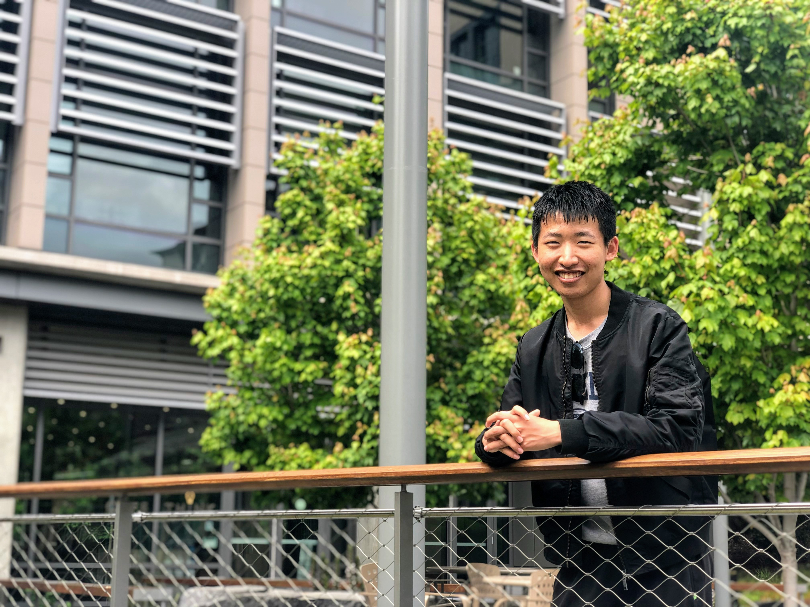

|

|
Jiakun Yan
Hi, my name is Jiakun Yan. I am a fourth-year Ph.D. student at
University of Illinois at Urbana-Champaign, advised by
Marc Snir.
I am working on a cool communication runtime, the Lightweight Communication Interface,
to better utilize modern parallel architectures and serve modern high-level programming
models.
CV /
GitHub
|
|
Contact me
| Email |
jiakuny3[AT]illinois[DOT]edu
jiakunyan1998[AT]gmail[DOT]com
|
|
Research Interest
|
My research interest lies in parallel computing and the broader computer system
area. Currently, I am interested in designing high-level task-based programming models
and low-level communication systems to better utilize modern parallel architectures and
improve the performance, scalability, and programmability of modern parallel
applications.
|
|
Education
|
University of Illinois at Urbana-Champaign, USA, from Aug. 2020 to present
Computer Science Ph.D. student,
advised by Marc Snir
|
|
Shanghai Jiao Tong University, China, from Sep. 2016 to June 2020
Department of Computer Science & Zhiyuan College, Bachelor of Engineering
|
|
Experience
|
Programming Models and Runtime Systems (PMRS) group, Argonne National Laboratory, USA, from May. 2023 to Aug. 2023
Research Assistant, advised by Yanfei Guo
|
|
Programming Systems and Applications Research Group, NVIDIA Research, USA, from May. 2022 to Aug. 2022
Research Assistant, advised by Michael Bauer and Michael Garland
|
|
PASSION Lab, Lawrence Berkeley National Laboratory, USA, from Aug. 2019 to Jan. 2020
Research Assistant, advised by Aydın Buluç and Kathy Yelick
|
|
Publication
| Jiakun Yan, Hartmut Kaiser, and Marc Snir. "Design and Analysis of
the Network Software Stack of an Asynchronous Many-task System – The
LCI parcelport of HPX" In Workshops of The International Conference on
High Performance Computing, Network, Storage, and Analysis (SC-W 2023).
[bib |
pdf ] |
| Benjamin Brock, Yuxin Chen, Jiakun Yan, John Owens, Aydın Buluç,
and Katherine Yelick. "RDMA vs. RPC for Implementing Distributed Data Structures"
In Workshop on Irregular Applications: Architectures and Algorithms (IA3), 2019.
[ bib |
pdf ] |
|
Award
| Best Poster Award, WAMTA24,
A Lightweight Communication Interface for Asynchronous Many-Task Systems, Feb. 2024,
[Zenodo |
pdf] |
|
Project
|
|
HPX + LCI
Integrating LCI into a task-based programming runtime
Advised by Marc Snir, UIUC, Aug. 2021 - present
WAMTA23 Poster
[Zenodo |
pdf]
PAW-ATM23 Workshop Paper
[bib |
pdf ]
The High Performance ParalleX (HPX) is a runtime system known for its support for the asynchronous task programming model. Currently, HPX uses MPI as its major communication backend. In this project, we would like to add an LCI parcelport for HPX and compare the new HPX/LCI system with the original HPX/MPI system to investigate: (a) how efficiently the current LCI can interact with HPX. (b) where LCI can further improve to better support the communication requirement of asynchronous task frameworks.
The first version of a full-fledged LCI parcelport implementation has been merged to the HPX master branch
and will be shipped with HPX release 1.9.0. We evaluated the performance using a real-world application,
Octo-Tiger : a star system simulator based on the fast multipole method on adaptive Octrees. The LCI parcelport
achieved 40% performance speedup compared to the MPI parcelport on 32 nodes/4096 cores.
|
|
|
The Lightweight Communication Interface (LCI)
A cool communication runtime for parallel libraries and frameworks
Advised by Marc Snir, UIUC, Aug. 2020 - present
GitHub
WAMTA24 Poster
[Zenodo |
pdf]
The Lightweight Communication Interface (LCI) is a low-level communication runtime. It aims to provide efficient support for applications with asynchronous, multithreaded, irregular communication patterns. It is designed with task-based runtimes as the target clients but should be general enough to apply to other irregular applications such as graph analysis/sparse linear algebra. Its major features include (a) flexible communication primitives and signaling mechanisms (b) better multithread performance (c) explicit user control of communication behaviors and resources.
I am one of the major developers of LCI. I developed the Libfabric backend of LCI to enable LCI to run on the Cray/GNI platforms. I am evaluating the multithreaded performance of LCI and exploring ways, such as utilizing multiple hardware contexts, to improve its multi-threaded performance.
|
|
|
TaskFlow
A task-based runtime on distributed-memory system
Advised by Josep Torrellas and Marc Snir, UIUC, Jan. 2021 - May. 2021
TaskFlow is a simple but efficient task-based runtime for distributed-memory systems. It adopts the PTG-based task programming model that enables reduced time/memory overhead and fine-grained synchronization. It executes tasks according to an explicit task dependency graph and uses active messages to proactively signal remote tasks.
We implement TaskFlow based on Argobots and MPI. We perform a collection of micro-benchmarks and mini-applications to evaluate the performance of its various configurations and compare it with two established PTG-based task systems, TaskTorrent and PaRSEC. The benchmark results show that TaskFlow generally achieves the best performance under various circumstances.
|
|
|
Asynchronous RPC Library (ARL)
A high-throughput RPC system with node-level aggregation and single-node work-stealing
Advised by Aydın Buluç and Kathy Yelick, LBNL, Aug. 2019 - Jul. 2020
GitHub
Data-driven HPC applications suffer significant overheads for their fine-grained communication pattern. ARL is a high-throughput RPC system that targets at this kind of data-driven applications. It uses Remote Procedure Call (RPC) to provide powerful expressiveness. It achieves high performance through node-level aggregation, work-stealing, and innovate concurrent data structures. It also provides a flexible programming interface for users to program.
Node-level aggregation is the primary idea underlying the ARL system, which aggregates RPC requests sharing the same source and target node and sends them together as one large message. Using this methodology, ARL is able to utilize high bandwidth across cores on the same node to achieve low overhead and high throughput.
Work-stealing is another important feature of the ARL system. Every core could execute(steal) inbound RPC requests of other cores on the same target node. In this way, ARL could reduce attentiveness-sensitivity and load imbalance problems.
I am the main developer of the ARL system. ARL is developed as a C++ header-only library based on the GASNet_EX communication library.
|
|
|
RDMA vs. RPC for Implementing Distributed Data Structures
Advised by Aydın Buluç and Kathy Yelick, LBNL, Aug. 2019 - Sep. 2019
RDMA and RPC are two primary ways for implementing distributed data structures. In this project, we compared the implementation of distributed data structures using RDMA and RPC. We developed an analytical model to predict the performance of RDMA- and RPC- based data structures based on their constituent operations, and then compared it with real-world performance.
My primary focus in this project is to design and conduct experiments to investigate the attentiveness problem of RPC, which became one of the motivations for the later ARL system project.
This project is accepted by IA3 workshop, Supercomputing 2019.
|
|
|
Berkeley Container Library in Rust
A memory-safe distributed data structure library in Rust
CS267 course project, UC Berkeley, Mar. 2019 - May 2019
Advised by Benjamin Brock
GitHub
The Berkeley Container Library (BCL) is a distributed data structure library based on RDMA written in C++. Rust is a system programming language for both safety and high performance. We re-designed and implemented BCL using Rust to provide several safety guarantees for the distributed data structures, including data race, memory leaking, type check, and explicit type convert.
I was one of the main developers of BCL in Rust. I developed the global pointer based on OpenSHMEM backend, which is the base for high-level data structure and has little overhead compared to the raw backend functions, and the global guard, which prevents data race in reference to the mutex struct in Rust. I also contributed some codes to the distributed Array, GuardArray struct and their benchmarks.
|
|
Talk
| Charm++ Workshop 2024, Lightweight Communication Interface: High-Performance Communication Support for Asynchronous Many-Task Systems, Apr. 25th, 2024, [slides] |
| 14th JLESC Workshop, Lightweight Communication Interface: Efficient Message Passing support for irregular, multithreaded communication, Sep. 28th, 2022, [slides] |
|